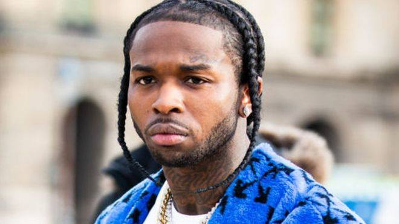
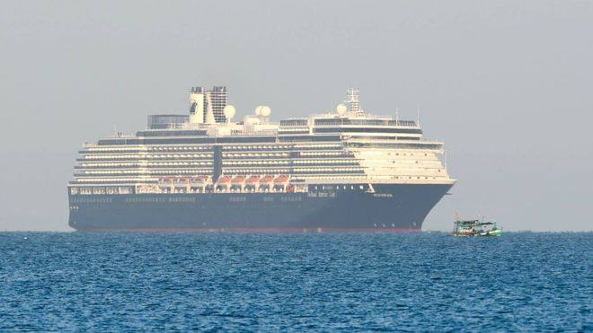
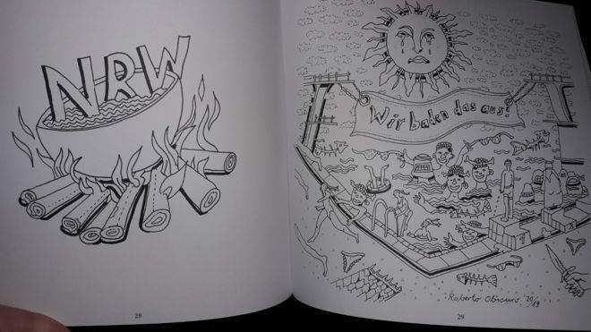

Adhikari, Gurung claim NNIPA awardsBimal Adhikari of paragliding and Nima Gurung of taekwondo were declared the outstanding athletes at the 14th NNIPA Sports Awards here at the Basantapur Dabali today.Adhikari and Gurung were selected from among the 28 best players recommended by their national associations.Also named the best players in their respective sports disciplines, Adhikari and Gurung received Rs 100,000 each.Nima Gurung of Taekwondo winner of the best player of the year 2075 with trophy and cash prize during the 14th NNIPA Sports Award Ceremony 2076 at Basantpur Dabali, Kathmandu Durbar Sqaure in Kathmandu on Tuesday. Photo: Udipt Singh Chhetry/THTBharat Khawas (second from right) receives best football player award from Mayor Bidhya Sundar Shakya of Kathmandu Metropolitan while former skippers Raju Kaji Shakya (left) and Hari Khadka looks on during the 14th NNIPA Sports Award Ceremony 2076 at Basantpur Dabali, Kathmandu Durbar Sqaure in Kathmandu on Tuesday. Photo: Udipt Singh Chhetry/THTOther winners of the best player awards included Bharat Khawas (football), Saraswoti Chaudhary (volleyball), Sushmita Nepal (shooting), Sanju Chaudhary (weightlifting), Subham Shrestha (swimming), Nabita Shrestha (table tennis), Omkar Singh (fencing), Prerana Koirala (tennis), Renuka Kumar Rajbanshi (kabaddi), Roshan Tamang (sepak takraw), Pemba Sherpa (sport climbing) and Milan Singh Thakuri (boxing).Likewise, Bhupendra Thapa (roller sport), Dipesh Dhami (badminton), Upendra Thapa (kurans), Govinda Chaudhary (pencak silat), Basanta Tharu (triathlon), Ajit Kumar Yadav (golf), Manish Raj Upadhyaya (basketball), Indra Shrestha (judo), Bijay Shrestha (karate), Resham Gautam (wrestling), Juni Rai (wushu), Tilak Pun Magar (archery) and Tanka Bahadur Karki (golf) also won the awards. All the award winners received trophy and Rs 10,000 each. The Nepal National and International Players Association included the 28 sports disciplines in the award based on Nepal’s participation in the 2018 Asian Games held in Indonesia.Boxing coach Madan Kumar Gurung was honoured with the Gajaraj Joshi Ideal Sports Personality Award. Gurung, who is also the AIBA Referee and second-class officer at the National Sports Council, is regarded as one of the successful coaches in terms of producing the likes of Dal Bahadur Rana, Pushkar Dhoj Shahi, Prakash Thapa Magar and Man Bahadur Shrestha among others.He received Rs 35,000 along with felicitation letter.Spiker Saraswoti Chaudhary and athlete Ajit Kumar Yadav were named the emerging players and they earned Rs 50,000 each. Boccia player Mahima Koirala won the para-athlete award and received Rs 10,000. Rajendra Chitrakar was honoured with NNIPA Sports Journalist Award and he got Rs 25,000. The NNIPA also felicitated AIPS Sports Award winner and General Secretary of Nepal Sports Journalists Forum Prajwal Oli on the occasion.Kathmandu Metropolitan City Mayor Vidhya Sundar Shakya, Nepal Olympic Committee President Jeevan Ram Shrestha, National Sports Council Vice-president Pitamber Timsina and Member Secretary Ramesh Kumar Silwal, Madhyapur Thimi Municipality Mayor Madan Sundar Shrestha and NNIPA President Deepak Shrestha among others handed over the awards to the athletes. Going with the tradition of organising the award ceremony in different historic sites, Madhyapur Thimi will host the next edition.
|
Athletico edge Liverpool with vintage defensive display
MADRID: Champions League holders Liverpool will need to summon another famous European comeback at Anfield next month after they were beaten 1-0 away to Atletico Madrid in their last-16 first leg on Tuesday.Champions League, Atletico MadridAtletico Madrid’s Saul Niguez and Jan Oblak celebrate after the match during the Champions League Round of 16 First Leg match between Atletico Madrid and Liverpool, at Wanda Metropolitano, in Madrid, Spain, on February 18, 2020. Photo: ReutersSpain midfielder Saul Niguez struck the only goal of the game in the fourth minute by bundling into the net from close range following a corner, their traditional weapon of choice in recent years.Liverpool, who have won 25 of 26 Premier League games this season and are on course for a record-smashing title win, missed a series of chances to equalise in the second half, with Mohamed Salah and captain Jordan Henderson coming closest to scoring.Juergen Klopp’s side play at home to Atletico on March 11 in the return leg at Anfield, where they produced an incredible 4-0 win over Barcelona in last year’s semi-final second leg after losing the first match 3-0.“We gave them the best possible start and that gets the fans behind them and then they start falling over and getting under the skin a bit,” Liverpool defender Andrew Robertson told reporters.“We put in a decent performance and we know we can be better. We’ve got a second leg to put it right. They celebrated as if they won the tie after the game. They are coming to Anfield and we know our fans will be there.”Diego Simeone’s men have looked nothing like the sides that reached the 2014 and 2016 Champions League finals and challenged Real Madrid and Barcelona’s duopoly of La Liga for most of this campaign. They trail league leaders Real by 13 points.But on Tuesday they produced a vintage defensive display, sitting deep and barely giving Liverpool any space for their attacking trident of Salah, Roberto Firmino and Sadio Mane to work their usual magic.“This is the result of hard work and what happens when you never stop believing but keep on going,” match-winner Saul told reporters.“We have kept on working even though no-one believes in us and wants to bring us down. I celebrated the goal with so much passion because I was so up for the game, we have been criticised a lot but luckily I was able to help us out.”Atletico’s Wanda Metropolitano stadium was the scene of Liverpool’s 2-0 triumph over Tottenham Hotspur in last year’s final but they faced a very different type of atmosphere this time around.SCORCHING ATMOSPHEREClouds of billowing red smoke greeted the Atletico bus when it arrived at the ground as the home supporters stoked up a scorching atmosphere throughout the game to give their side a lift in the middle of their worst season in recent memory.The home side were happy to let Liverpool dominate possession but despite having 73% of the ball, Klopp’s side did not manage a single shot on target, although Atletico defender Felipe did block a goalbound shot from Salah in the first half.Atletico only had one other attempt aside from their goal, when Alvaro Morata fired straight at the legs of Liverpool goalkeeper Alisson.Liverpool forward Mane was fortunate not to be sent off late in the first half after clashing with Sime Vrsaljko while on a yellow card and he was swiftly substituted by Klopp for Divock Origi, who scored the second goal in last year’s final.He caused little disquiet to Atletico’s towering defenders, yet Salah should have levelled with a header which went wide of the near post, while Henderson also narrowly missed the target from inside the area later on.
|
U-18 BasketBall
KATHMANDU: White House International College and Xavier International College advanced to the final of the IIMS fifth Under-18 National Basketball Tournament here at the NSC covered hall on Tuesday.
Suraj Khatri of White House College jumps to score against New Zenith College in semi-final match during the fifth IIMS U-18 National Basketball Tournament at NSC covered hall, Tripureshwor in Kathmandu on Tuesday. Photo: Udipt Singh Chhetry/THT. White House thrashed New Zenith 75-56 in the first semi-final match in which Suraj Khatri top scored for the winning side with 25 points. In another semi-final match, Xavier defeated Samriddhi 73-66 riding on 15 points from Sabin Karki. The third place playoff and final matches are slated for Wednesday. A total of 12 teams took part in the tournament, organised by Nepal Basketball Association as the selection event for the U-18 tournament to be held in Bangladesh later this year.
|
Man United's Maguire should have seen red, saya Lampard
Chelsea manager Frank Lampard has said Harry Maguire should not have been on the pitch when he scored his side’s second goal in a 2-0 Premier League win on Monday after the Manchester United defender escaped a red card for kicking Michy Batshuayi.
The Video Assistant Referee (VAR) system was in the spotlight once again after Maguire kicked Batshuayi in the groin area in the first half at Stamford Bridge.
Premier League, Manchester United, Harry Maguire, Chelsea, Michy Batshuayi
Manchester United’s Harry Maguire reacts as Chelsea’s Michy Batshuayi, Pedro and Cesar Azpilicueta look dejected during the Premier League match between Chelsea and Manchester United, at Stamford Bridge, in London, Britain, on February 17, 2020. Photo: Reuters. “Maguire should have been sent off,” Lampard told British media. “That’s clear, and that obviously changes the game.”
|
Sensational Haaland gives Dortmund 2-1 win over PSGDORTMUND: Borussia Dortmund’s lethal teenage striker Erling Haaland scored twice in eight minutes to lead them to a 2-1 win over Paris St Germain in their Champions League last 16, first leg on Tuesday.The Norwegian, 19, who joined in the last transfer window and has eight goals in five Bundesliga matches, stabbed in from close range after a quick-fire passing move in the 69th minute.He then thundered home an unstoppable shot for his second goal in the 77th, two minutes after PSG’s Brazilian forward Neymar had levelled for the French champions.Champions League , Borussia Dortmund, Erling Braut Haaland Borussia Dortmund’s Erling Braut Haaland celebrates after the match during the Champions League Round of 16 First Leg match between Borussia Dortmund and Paris St Germain, at Signal Iduna Park, in Dortmund, Germany, on February 18, 2020. Photo: Reuters
Haaland, the first Dortmund player to score in his first league, German Cup and Champions League matches, has reached 10 goals in seven games in Europe’s elite competition this season, including eight for Salzburg in the group stage, faster than anyone.He is only the second teenager to net 10 Champions League goals, after Kylian Mbappe, and is the first teenager to score 10 in a single campaign in the competition.He is also the first player to score with two different teams in the same season in the competition.“I still need to improve, keep working,” Haaland said. “I want to go far in the Champions League. With the second goal I enjoyed the moment.”PSG, who were eliminated at this stage of the competition in the previous three seasons, had fit-again Neymar and French striker Mbappe back in the starting lineup but were almost completely shut out by an efficient Dortmund backline.
|